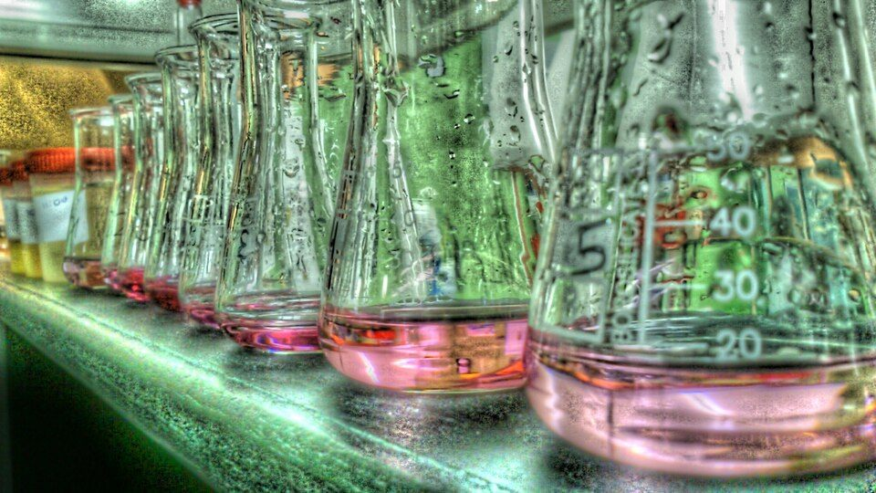

Biologia
Características dos seres vivos, Reino Animal, bactérias x vírus e plantas medicinais.
Ver disciplina →Áreas do Saber / Ciências da Natureza
Como a vida, a matéria e a energia funcionam, e como esse conhecimento ajuda a tomar decisões.
Características dos seres vivos, Reino Animal, bactérias x vírus e plantas medicinais.
Ver disciplina →
Funções orgânicas no cotidiano, reações químicas, polímeros e a OQSP.
Ver disciplina →
Radiação: tipos, usos, riscos e decisões na comunidade.
Ver disciplina →